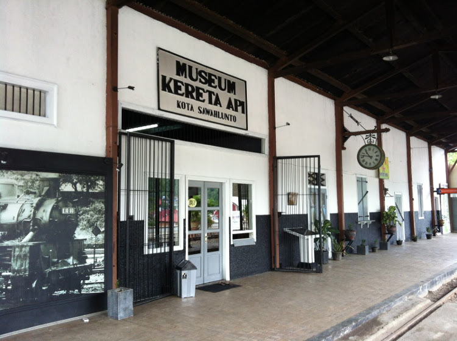
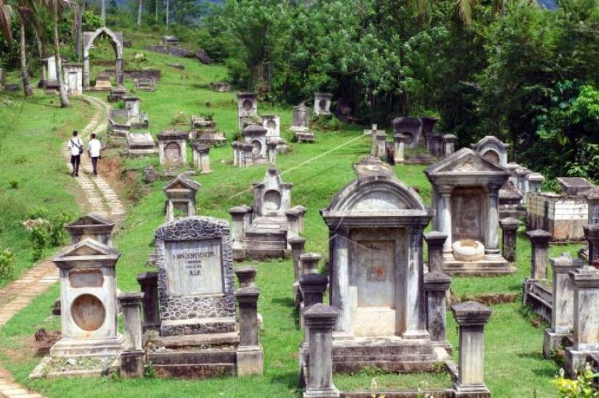
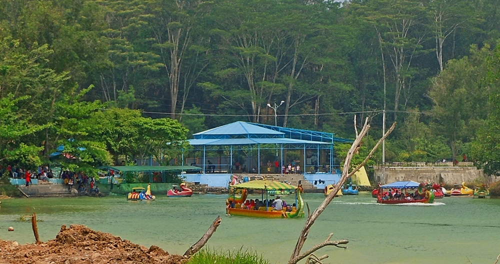
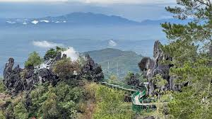

🏙️ Wisata Sejarah & Budaya (Warisan Tambang)

Tambang Batubara Ombilin
UNESCOSitus tambang batubara tua yang jadi ikon utama Sawahlunto. Kamu bisa menelusuri terowongan, melihat relics tambang, rel kereta tua, dan bangunan kolonial yang dipelihara sebagai museum sejarah pertambangan.

Museum Kereta Api Sawahlunto
Tempat ini menampilkan lokomotif tua "Mak Itam" dan sejarah kereta api yang dulu dipakai mengangkut batu bara dari Sawahlunto ke Pelabuhan.

Museum Goedang Ransoem
Dahulu merupakan dapur besar yang memasok makanan untuk para pekerja tambang, kini jadi museum dengan koleksi artefak zaman kolonial Belanda.

Gedung Pusat Kebudayaan Sawahlunto
Gedung bersejarah bekas rumah bola pejabat Belanda — kini jadi tempat pertunjukan budaya dan pameran.

Makam Belanda Sawahlunto
Kawasan pemakaman tua dengan nisan bergaya Eropa yang unik, sering jadi spot foto dan bagian dari sejarah kolonial kota.

Masjid Agung Sawahlunto
Masjid bersejarah dengan arsitektur unik perpaduan Timur Tengah dan Eropa, ikon religi Kota Sawahlunto.
🌄 Wisata Alam & Panorama

Danau Biru
Kolam bekas galian tambang yang kini jadi danau cantik dengan air berwarna biru jernih, cocok untuk foto pemandangan dan santai.

Danau Kandi
Danau alami lain dekat Sawahlunto dengan panorama perbukitan hijau dan kegiatan seperti perahu.

Puncak Cemara City View
Bukit dengan pemandangan kota Sawahlunto dari atas, sangat cantik saat matahari terbenam dan untuk foto panorama.

Puncak Polan (Puncak Poland)
Spot lain di ketinggian untuk melihat seluruh kota di bawah dan sering jadi lokasi untuk paralayang.

Puncak Batu Runcing
Formasi batuan unik yang jadi daya tarik alam dan foto estetik di kawasan Silungkang.
🛤️ Spot Lainnya dan Rekomendasi
Taman Segitiga
Alun-alun kota yang sering jadi titik berkumpul masyarakat dan wisatawan.
Silo & Gudang Batu Bara
Struktur lama penyimpanan batu bara yang jadi latar foto menarik.
Kota Tua Sawahlunto
Kawasan dengan deretan bangunan kolonial yang Instagramable.